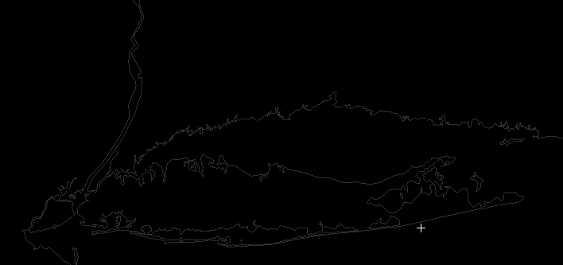
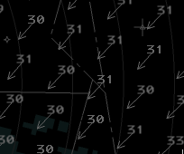

All of the configuration of vice is via JSON-formatted files.
Extending vice to include more airports or additional scenarios is a matter
of generating additional JSON that provides the necessary information.
In the following, the use of terms like "element", "object", "member", "array", etc.,
correspond to their use in the JSON specification. See this page for reference.
See the resources/scenarios/ directory in the
vice source code for the scenarios that are currently available,
the resources/configurations/ directory for
facility configuration files (control positions, STARS config, and handoff topology),
and the
resources/videomaps/ directory for
the video map definitions.
Files in those directories with names ending with a "zst" suffix have been compressed using zstandard;
in order to examine their contents, you'll want to install zstandard or another decompression program that supports that
format.
When developing scenarios, you might make a copy of an existing scenario's JSON file and modify it in order to add more configurations,
or you or might specify completely new scenario and video map files if you're working on support for a new TRACON.
While you're doing this you can point vice at the
file you're working on using the command-line: if you open a command prompt and run vice from the command line,
there are two options make it possible to specify
additional files for testing:
The -scenario command line option takes a single filename.
The scenario specified file is loaded at startup time; if it has the same name as an existing scenario, it replaces
that scenario's definition.
In a similar manner, the -videomap command line option also takes a single filename that specifies a file
with video map definitions.
When you're working on a new scenario, you may omit the "video_map_file" specifier in its JSON file.
In this case, vice will automatically use the video map file you specified via -videomap
or via the UI.
If you're working on multi-controller support for a
scenario, you may want to run a vice server locally to
debug it. A few command-line options are useful:
-runserver launches a vice server on
your local system
-server specifies the IP address and
(optionally), the port of a vice
server to connect to. Specifying localhost
will connect to a local server launched
via -runserver.
-port allows specifying a custom port number
for the server to listen to. If this is used, then the
address supplied to -server should be of the
form hostname:port.
Windows Example: Running a Local Multi-Controller Server
Here's a step-by-step guide for testing multi-controller scenarios on Windows:
Launch Command Prompt: Press the Windows key, type "cmd" in the search box, and press Enter.
Navigate to the vice directory: Enter cd "c:\Program Files (x86)\Vice" Note: The quotes are essential if the path contains spaces.
Start the multi-controller server: Enter enter vice.exe -runserver
If there are errors in your scenario configuration, they will be displayed here. Otherwise, the server launches and will be
running in the background.
Launch the first controller instance: Enter vice.exe -server localhost
This launches vice connected to your local server. In the "New Simulation" window, you'll see the option to "Create multi-controller" simulation.
Launch additional controller instances: For each additional controller position, open another Command Prompt
and enter: vice.exe -server localhost
Each new instance can connect to the simulation created by the first controller. You'll be able to perform handoffs and coordinate between the different controller positions by switching between the vice windows.
Restarting after scenario changes: If you modify your scenario files, you must restart the server to load the changes:
Close all vice client windows
Press Ctrl+Shift+Esc to open the Task Manager
Click the "Details" tab and look for "vice.exe" in the list to find the server
Select it and click "End task"
Return to step 2 above to restart the server with your updated scenario
Basics
Facility Engineering FAQ
Question
Answer
How do I get started?
To get started creating a facility configuration file for vice, read through the
documentation provided below. It will contain all
of the information that will need to be specified in the facility configuration file. You can also
refer to the
vice GitHub page for
pre-exisiting scenarios
How do I test my edits?
In vice, you can test your edits with the command line. On Windows, open up a command prompt
and set the directory to the folder
with the vice executable. Then, run
vice.exe -scenario path_to_scenario_file -videomap path_to_videomap_file. On MacOs,
it's a very simillar command. Chnage the directory of the terminal to where Vice.app is located. Then,
run ./Vice.app/Contents/MacOs/vice
-scenario path_to_scenario_file -videomap path_to_videomap_file
Join the vice Discord and send the file to
one of the vice developers or facility engineers
How can I get the lat/long coordinates of a point on a map?
Pressing [Control][Shift] and clicking a point on the map will copy the
coordinates of where you clicked into the clipboard. Alternatively, you can enter
.DRAWROUTE[Enter] in STARS and click a series of points. All of the
points in the route will be copied to the clipboard. If you make a mistake, pressing
[Backspace] will delete the last point in the route. Press [Escape]
to exit this mode.
Specifying Locations
Throughout the vice configuration files, it's often necessary to specify various locations on the Earth.
vice has a built-in database of all of the airports, VORs, NDBs, and fixes in the United States (courtesy of the FAA),
which allows using these directly for specifying locations. The locations of runway thresholds are available via the syntax
KJFK-22L where the airport name and runway specifier are separated by a hyphen.
Locations can also be specified via
latitude-longitude positions, given as strings. For convenience, multiple latitude-longitude formats are supported.
Encoding
Description
Example
Name of VOR/NDB/fix
A string giving the name of an airport, VOR, NDB, or fix in the United States.
"JFK"
Decimal value pair
A pair of decimal numbers where the first specifies the latitude and the second specifies the longitude.
"40.6328888,-73.771385"
Degrees minutes
Latitude encoded with 4 digits representing degrees and minutes (sixtieths of a degree), followed by "N" or "S",
followed by a slash and then 5 digits representing degrees and minutes longitude, followed by "E" or "W".
"4037N/07346W"
Degrees, minutes, seconds
A pair of values with position specified in degrees, minutes, and seconds, separated by periods.
"N" and "S" are used to distinguish North and South latitudes and similarly for "E" and "W" with longitudes.
"N40.37.58.400,W073.46.17.000"
ISO6790 Annex H
A more compact degrees/minutes/seconds representation; see the Wikipedia page for details.
"+403758.400-0734617.000"
(In all of the examples above, the location specified is the same—the JFK VOR.)
In vice, if you hold down the control and shift keys and click on a point on the video map, the corresponding
latitude-longitude position is copied to the clipboard—this can be very useful when developing new scenarios!
Routes
When an aircraft's route is given, vice allows airways to be used to describe the route,
which simplifies the route specification when an aircraft is in fact flying along an airway.
Airways are given as part of the route; for example "WHITE V1 DPK" has the aircraft join V1
departing WHITE and follow V1 until DPK. (The alternative, "WHITE DIXIE MOVFA JFK DPK", is
more typing and more error-prone to enter.)
vice uses a custom syntax for specifying the routes of aircraft that allows giving
additional information that is used in the simulation.
In addition to the lateral positions along the route, it is possibly to specify speed and altitude restrictions, handoff points,
and headings to fly.
Here is an example route from a JFK departure. The first two fixes along the departure runway are automatically
provided by vice so the route starts with the specified fixes in the departure procedure.
The "/h223" after "RNGRR" specifies that the aircraft should fly a 223 heading as departing RNGRR.
It will maintain that heading until it
is further vectored by the controller. If there are further fixes after such a heading, the aircraft may be sent direct to one of
those fixes by the controller.
"SKORR METSS RNGRR/h223"
A variety of such things can be specified along with a fix:
/arestriction: for IFR routes, cross the fix with the specified altitude restriction
(with altitudes specified in 100s of feet). For VFR, aircraft will be at a random altitude within a given
altitude range.
The following options are available for specifying altitude restrictions:
low-high: cross at an altitude between low and high.
alt-: cross at or below alt.
alt+: cross at or above alt.
alt: cross at alt.
/delete: the aircraft will be deleted when it reaches the fix
/hheading: depart the fix at specified heading
/lheading: turn left to the specified heading at the fix
/rheading: turn right to the specified heading at the fix
/iaf: indicates that the fix is an IAF (initial approach fix)
/if: indicates that the fix is the IF (intermediate fix)
/faf: indicates that the fix is the FAF (final approach fix). This must be specified for one fix in each approach.
/flyover: indicates that the fix is a flyover fix (as opposed to the
default, fly-by). Aircraft must pass directly over flyover
fixes before turning to the next fix, while they may turn early with fly-by fixes.
/ph: fly present heading (rounded to the nearest 5 degree increment) departing the fix.
/sspeed: cross the fix at the given speed
/caltitude: climb to the specified altitude (in 100s of feet, between 0 and 600) when passing the waypoint, as if the controller issued that instruction. Cannot be combined with /d at the same waypoint.
/daltitude: descend to the specified altitude (in 100s of feet, between 0 and 600) when passing the waypoint, as if the controller issued that instruction. Cannot be combined with /c at the same waypoint.
A number of specifiers are intended for ambient traffic that's not under the control for a human:
/clearapp: the aircraft will be cleared for the assigned approach passing the fix.
/ho: the aircraft should be handed off from the virtual controller when it passes the fix.
A TCP may be specified after /ho, in which case the aircraft is handed off to the
corresponding virtual controller. If no TCP is specified, the aircraft is handed off to the
appropriate human controller.
/tc: "transfer comms": after passing a /ho fix, normally aircraft call in
a few seconds after the human controller accepts the handoff. However, if /tc is specified
at a later fix in the route, they won't contact the controller until reaching that fix. Additionally, this can be used in departure routes to signify a
specific fix at which aircraft should contact the departure controller.
/poTCP id: when the aircraft passes the fix
and if it is under the control of a virtual controller,
issue a point out to the controller identified by the given TCP id (i.e., the
controller ID that would be used when doing a point out in STARS.)
/radiusnum: rather than flying precisely to the fix, the aircraft will fly to
a random point within num miles of the fix.
/shiftnum: rather than flying precisely to the fix, the aircraft will fly along
the route to the fix but will turn for the next fix at a random distance before or after the fix,
up to num/2 nautical miles in each direction.
/spspscratchpad: sets the aircraft's primary scratchpad to the given value.
/ssspscratchpad: sets the aircraft's secondary scratchpad to the given value.
/cpsp: clears the aircraft's primary scratchpad
/cssp: clears the aircraft's secondary scratchpad
In addition to /radius and /shift, which are also useful for randomizing VFR
routes, there's an additional specifier that can be used with VFR aircraft routes:
/airwork: the aircraft should perform airwork
centered around the fix. An altitude restriction must be specified using /a to give an altitude
range for the airwork. By default, they will do so for 15 minutes and remain within 7nm of the fix;
alternatively, the time or distance may be specified via /airworkradiusnm
and/or /airworkminutesm. For example: /airwork30m10nm
specifies 30 minutes of airwork within a 10nm radius of the fix.
If the aircraft should follow an arc leaving a
fix, /arc can be given after the fix.
It can be used in two ways:
Both a radius in nautical miles as well as the fix at the
center of the arc's circle can be specified. For
example, HANAV/arc16OMN specifies a 16nm radius
arc centered at OMN.
Alternatively, just the length of the arc may be given.
For example, WUPMA/arc7.5 ALABE has aircraft fly along the 7.5nm long arc between WUPMA and ALABE.
For both uses, the direction of the arc is
automatically determined based on the position of the following fix.
For approach fixes that have procedure turns, a number of additional items can be specified:
/hilpt: there is a hold in lieu of procedure turn (i.e., a racetrack procedure turn) associated with the fix.
The default is right turns and a 1 minute limit for ILS/VOR/LOC approaches and a 4 nm limit for RNAV approaches.
Different limits can be specified directly; for example /hilpt6nm gives a procedure turn with a 6 nm limit and
/hilpt2min specifies a 2 minute limit. For left turns, add a l after the slash, like
/lhilpt.
/pt45: specifies that there is a standard 45 degree procedure turn at the fix. (This has the same defaults—
right turns, 1 minute (ILS/VOR/LOC) / 4 nm (RNAV)—as HILPTs. Alternative values are specified the same way.)
/ptaaltitude: if the aircraft should descend during the procedure turn, this can be used to specify
the final altitude it should have at the end of the turn. (The altitude should be given in 100s of feet.)
/nopt180: specifies that aircraft approaching the fix in the 180 degree semicircle of directions aligned
with the final approach course should not perform the procedure turn. (As an example, see the KJAX RNAV Z 8 approach; this applies for aircraft between heading 346 and 166
arriving at UDAQI.)
/nopt: when specified at a fix prior to one with a procedure turn, indicates that aircraft that
pass that fix should not fly the procedure turn.
Airlines and Aircraft
Departures, arrivals, and overflights all need to know about which airlines fly their routes and which aircraft they use for them.
Airlines are specified via objects with the following members:
for the database of possible airlines.
In that file, each airline may have one or more aircraft fleets specified, in its "fleets" member.
Element
Type
Description
"fleet"
String
(Optional) If specified, gives the fleet of the airline's aircraft
that are used for this overflight.
"icao"
String
The ICAO code of the airline (which must be present in vice's openscope-airlines.json file.)
"types"
Array of strings
(Optional) If specified, gives one or more aircraft types to use.
It is not allowed to specify both "fleet" and "types".
If neither "fleet" nor "types" is specified, vice randomly chooses an aircraft type from the "default" fleet, but if
a particular fleet's aircraft is a better match to a route, you may want to use it or to specify aircraft
types directly.
For example, AAL's "long" fleet would be a good choice for trans-Atlantic flights.
For reference, the available types of aircraft and their performance characteristics are available in the
openscope-aircraft.json
file.
As is probably obvious, both of these databases are by way of openScope,
which kindly made them available under the MIT license.
Emergencies
Emergency aircraft can be configured to randomly occur during simulation sessions.
The file resources/emergencies.json is used to store information about the
possible emergencies, including what phase of flight they apply to, what radio transmissions
pilots will make over the course of them, and what they will ask of ATC.
That file contains an array of emergency specifications, each with the following members:
Field
Type
Description
applicable_to
String
Which phase(s) of flight the emergency applies to, should be one or more of "departure", "arrival", "external", or "approach" (comma-separated for multiple).
"departure": Departures within 15nm of departure airport
"arrival": Arrivals that have not been cleared for the approach
"approach": Arrivals that have been cleared for the approach
"external": Inbound arrivals that are handed off from an external facility (and presumed to have already declared an emergency).
name
String
Human-readable name of the emergency, must be unique across other emergencies.
stages
Array of objects
Defines how the emergency unfolds over time.
weight
Number
(Optional) Relative probability of this emergency occurring (default: 1.0). Higher values make the emergency happen more often.
The emergency stages array in "stages" contains objects that define stages of the emergency.
For example, this allows aircraft to ask for vectors to troubleshoot before either resolving a situation
or going ahead and declaring an emergency. The objects have this structure:
Field
Type
Description
checklists
Boolean
(Optional) If true, the transmission will include a statement that the pilots will need some time to run through checklists.
declare_emergency
Boolean
(Optional) If true, the aircraft goes ahead and declares an emergency.
duration_minutes
Array of 2 integers
Range [min, max] for how long to remain in this stage before advancing to next stage. Required except for the final stage, since there is no next stage.
request_delay_vectors
Boolean
(Optional) If true, a request for delay vectors will be added to the aircraft's transmission.
request_equipment
Boolean
(Optional) If true, the aircraft will request emergency equipment to be standing by when they arrive.
request_return
Boolean
(Optional) If true, the aircraft will request at this stage to return to their departure airport.
An automatically-generated return request will be added at the end of any transmission specified for them.
stop_climb
Boolean
(Optional) If true and aircraft is climbing, adds a transmission notifying the controller that the aircraft will be stopping
its climb. (The altitude used will be the next higher altitude that's a multiple of 1,000 feet.)
transmission
String
Radio transmission text.
Multiple phraseology alternatives can be specified using bracket notation: [option1|option2|option3];
if this is used, one of the alternatives will be randomly selected when the transmission is made.
For example: "[we have a|we've got a] gear unsafe indication" will randomly say either
"we have a gear unsafe indication" or "we've got a gear unsafe indication".
The transmission field may be omitted if "request_return" is true,
in which case the transmission will consist only of the return-to-field request.
Here is an example of an emergency with two stages: a departing aircraft will level off and ask for delay vectors.
After 5-10 minutes, it will request to return to the departure airport.
vice includes JSON files that map aviation terms to spoken pronunciations.
These mappings are used for both speech-to-text recognition (understanding what a controller says)
and text-to-speech synthesis (generating spoken responses from pilots).
The files are stored in the resources/ directory.
File
Key Type
Value Type
sayairport.json
ICAO airport codes
Array of strings (multiple alternatives)
sayairline.json
Airline names
String
sayactype.json
Aircraft type codes
Array of strings
sayfix.json
Fix/navaid names
String
saysid.json
SID names
String
saystar.json
STAR names
String
Files with array values (airports, aircraft types) allow random selection among variants
for more natural-sounding speech. Files with single string values have one canonical pronunciation.
Facility Configuration
Facility Configuration
Facility-wide settings are defined in separate JSON files, stored in
the resources/configurations/
directory. They're organized by ARTCC and facility name (e.g., resources/configurations/ZNY/N90.json).
When a scenario is loaded, vice automatically loads the corresponding facility configuration
based on the scenario's "tracon" field.
Each facility configuration file may contain the following top-level elements:
Element
Type
Description
"facility_adaptations"
Object
Defines settings and configurations for the facility.
See the Common, ERAM,
and STARS subsections for documentation about the items stored in this object.
"control_positions"
Object
Information about all of the controllers at the facility.
Each member specifies a controller for the named position/sector;
the sector id of the control position is the key of the object.
For each position, the following members should be specified:
"control_positions" members
Element
Type
Description
"area"
String
(Optional) The area for this controller. For TRACON controllers, this is auto-derived
from the first digit of the position id. For ERAM controllers, it must be specified manually.
"callsign"
String
(Optional) A human-readable callsign for the position (e.g., "PHL_NA_APP").
"facility"
String
(Optional) The STARS facility identifier for the controller.
"frequency"
Number
The controller's radio frequency, expressed as an integer (e.g., 125325 for 125.325).
"radio_name"
String
The name of the control position, used in radio readbacks (e.g., "Philadelphia approach").
"scope_char"
String
(Optional) A single character for the STARS position symbol for tracks owned by this position (e.g., "C").
If unset, the position symbol is generated automatically:
for local positions, the last character of the TCP id ("4P" gets "P");
for positions at external facilities, the numeric "facility_id";
for enroute controllers (in ARTCC configs), the first character of their sector id ("N56" gets "N").
An error is issued if the given "scope_char" is the same as vice would have automatically selected.
"fix_pairs"
Array of objects
Defines fix pair rules for fine-grained aircraft routing assignments.
Each object specifies an entry/exit fix combination with optional constraints.
"fix_pairs" members
Element
Type
Description
"altitude_range"
Array of two numbers
(Optional) Altitude range [floor, ceiling] in feet. If omitted or [0,0], no altitude constraint.
"entry_fix"
String
The entry fix name. Empty string matches any entry fix.
"exit_fix"
String
The exit fix name. Empty string matches any exit fix.
"flight_type"
String
(Optional) "A" for arrivals, "P" for departures, "E" for overflights. If omitted, matches any type.
"priority"
Number
The match priority; lower numbers are higher priority. Must be unique per configuration.
"handoff_ids"
Array
An array of objects identifying neighboring facilities and mapping them
to short position identifiers used in handoff route specifications (e.g., /ho1Z).
Controllers from each listed facility are loaded and may participate in handoffs.
"handoff_ids" members
Element
Type
Description
"field_e_format"
String
Specifies the Field E format for identifying a TRACON neighbor from an ARTCC.
Must be one of: "OneLetterAndSubset", "OneLetterAndStarsIdOnly", "TwoLetters", "TwoLettersAndSubset", or "FullStarsIdOnly".
"field_e_letter"
String
A single character used in Field E identification for the facility.
"id"
String
The facility code of the neighbor (e.g., "MKE", "ZAU"). Required.
"prefix"
String
A short prefix for the facility, used when referencing ARTCC sectors or TRACON sectors as a TRACON. For ARTCC neighbors this is a letter (e.g., "G" for ZAU); for TRACON neighbors this is a digit (e.g., "1"). Cannot be used in
conjunction with "stars_id", "single_char_stars_id", or "two_char_stars_id".
"single_char_stars_id"
String
A one-character STARS identifier for the facility (e.g., "A"). Used when referencing a TRACON from an ARTCC. Cannot be used in conjunction with "prefix".
"stars_id"
String
The full STARS identifier for the facility (e.g., "N90"). Used when referencing a TRACON from an ARTCC. Cannot be used in conjunction with "prefix".
"two_char_stars_id"
String
A two-character STARS identifier. Used when referencing a TRACON from an ARTCC. Cannot be used in conjunction with "prefix".
Common
The following settings in the "facility_adaptations" object of the
facility configuration file apply to all scope types:
Element
Type
Description
"areas"
Object
Defines per-area configuration for TRACON areas.
Each key is the area number (e.g., "1", "2", "3") corresponding to the first digit
of the control positions assigned to that area.
The following properties may be specified for each area:
"areas" members
Element
Type
Description
"airspace"
Object
Maps controller identifiers to arrays of airspace volumes.
Used to define controller-specific airspace boundaries for the area.
"beacon_code_blocks"
String
Comma-separated beacon code banks or discrete codes
to monitor by default for controllers in this area.
"center"
String
The initial center of the STARS scope for controllers in this area.
This is overridden by any center specified in "controllers" and overrides
the top-level "center" in the facility configuration.
"coordination_lists"
Array of objects
Coordination list objects for this area,
following the same format as the top-level "coordination" lists.
"default_airport"
String
The CRDA default airport for this area.
"default_maps"
Array of strings
Specifies which of the video maps should be initially displayed.
"flight_following_airspace"
Array of objects
Airspace volumes for flight following in this area.
"range"
Number
The initial range for the scope in nautical miles.
This is overridden by any range specified in "controllers" and overrides
the top-level "range" in the facility configuration.
"video_maps"
Array of strings
The available video maps shown in the
STARS DCB for controllers in this area.
The first 6 are shown in the main DCB and all are available under the "MAPS" sub-menu.
An empty string, "", may be given to specify an empty map button in the DCB.
No more than 38 maps may be specified.
Run vice.exe -listmaps [path-to-XXX-videomaps.gob.zst] to list the
available maps for an ARTCC.
Defines facility configurations that can be referenced by scenarios.
Each key is a short identifier (maximum 3 characters) for the configuration,
and the value is an object with the following members:
These configurations allow multiple scenarios to share the same assignment definitions,
reducing duplication when only the consolidation hierarchy differs between scenarios.
The TCPs referenced in assignments must exist in "control_positions" in the facility configuration.
It is acceptable for a configuration to include assignments for flows or departures
that a particular scenario doesn't use; only the assignments needed by the scenario's
active arrivals and departures are required.
"configurations" members
Element
Type
Description
"default_consolidation"
Object
Defines the consolidation hierarchy. Each key is a parent TCP,
and its value is an array of TCPs that are consolidated into it.
For example: {"1A": ["1B", "1C"], "1C": ["1D"]} means 1B and 1C are consolidated
into 1A, and 1D is consolidated into 1C (and transitively into 1A).
All positions that are covered by humans must be present exactly once in the consolidation hierarchy.
All positions must eventually consolidate into a single root position; this
is the primary controller for the scenario.
"departure_assignments"
Object
Maps from strings denoting departures
to the TCP responsible for them. Each string can be an airport name
("KJFK"), a slash-separated airport name and runway
("KJFK/22R"), or a slash-separated airport name and
SID ("KJFK/SKORR5"). It is not allowed to specify runway and SID departure selections
at an airport, however the airport name alone may be given as a catch-all
for any unspecified runways/SIDs if that method is used.
"fix_pair_assignments"
Array of objects
(Optional) Maps fix pair rules to controllers.
Each object has "tcp" (the controller to assign) and "priority" (matching priority; lower is higher).
These reference the fix pair definitions from the top-level "fix_pairs" in the facility config.
"go_around_assignments"
Object
(Optional) Maps airports or airport/runway
combinations to the TCP that should handle go-arounds. Keys can be
airport name ("KJFK") or airport/runway ("KJFK/22L") for per-runway
specification. If not specified for an airport/runway, the departure
controller for that airport is used.
"inbound_assignments"
Object
Maps inbound flow names to the TCP
that handles them. This determines where handoffs of inbound aircraft go.
"scratchpad_leader_line_directions"
Map of strings to strings
(Optional) Maps
primary scratchpad values to leader line directions. Keys are scratchpad
strings (subject to standard scratchpad validation rules) and values are
cardinal/ordinal direction strings: "N", "NE", "E", "SE", "S", "SW", "W",
or "NW". When an aircraft has a matching primary scratchpad, the specified
direction is used for the leader line. This takes effect after per-aircraft
and FDAM direction overrides but before controller default directions.
"controllers"
Object
Each entry specifies controller-specific configuration properties.
The applicable control positions are specified via members given as a TCP position
(e.g., "2G"). The following properties may be specified for each one:
"controllers" members
Element
Type
Description
"beacon_code_blocks"
String
A comma-separated list of beacon code banks
(two digits) or discrete beacon codes (four digits) that should be monitored by default.
"center"
String
The initial center of the controller's STARS scope.
This takes highest priority, overriding "areas" center and the top-level center.
"default_maps"
Array of strings
Specifies which maps in "video_maps" should be initially displayed.
"flight_following_airspace"
Array of objects
Regions of airspace (both lateral and vertical)
following the form that is used for defining filter regions.
(In this case, "id" and "description" are optional.) Only VFR aircraft within the specified
region will call the controller for flight following.
"range"
Number
The initial range for the controller's scope in nautical miles.
This takes highest priority, overriding "areas" range and the top-level range.
"video_maps"
Array of strings
Specifies which video maps should be displayed
in the DCB for the controller. If specified, these override the area-level "video_maps"
in "areas".
"max_distance"
Number
Maximum distance in nautical miles from center before aircraft are deleted. If unspecified, the default is 125 nautical miles for STARS facilities and 400 nautical miles for ERAM facilities.
"range"
Number
Default radar scope center range in nautical miles. If unspecified, a 50 mile range is the default.
"video_map_file"
String
Filename of the video map file from which the video maps are found (e.g., "videomaps/ZNY-videomaps.gob.zst")
ERAM
The following setting in the "facility_adaptations" object is specific to the ERAM radar scope:
Element
Type
Description
"airport_codes"
Map of strings to strings
Assigns a letter to an airport to display in an ERAM datablock.
STARS
The following settings in the "facility_adaptations" object are specific to the STARS radar scope:
Element
Type
Description
"airspace_awareness"
Array of objects
Each of these objects specifies an airspace awareness rule for a TRACON. Each object has the
following members:
"airspace_awareness" members
Element
Type
Description
"aircraft_type"
Array of strings
(Optional) Allowed aircraft types for the rule: "P" for props, "T" for turboprops/turboshafts, and "J" for jets.
"altitude_range"
Array of two numbers
(Optional) The cruising altitude range an aircraft must have for this rule to apply.
"fixes"
Array of strings
The fixes an aircraft could be filed on for this rule to apply. If "ALL" is given, all fixes match.
"receiving_controller"
String
The sector ID of the controller that will receive aircraft matching this rule.
"coordination_fixes"
Object
Each member maps a fix name to an array of coordination fix definitions.
"coordination_fixes" members
Element
Type
Description
"altitude"
Array of two numbers
The altitude range [floor, ceiling] in feet.
"from"
String
The controller initiating the handoff.
"to"
String
The controller receiving the handoff.
"type"
String
The type of coordination (e.g., "route", "radar").
"datablocks"
Object
Configures datablock display behavior.
"datablocks" members
The "datablocks" object configures how full, partial, and limited datablocks are displayed.
It contains the following sub-objects:
Element
Type
Description
"allow_long_scratchpad"
Boolean
This indicates whether aircraft scratchpads may be four characters long (rather than the default of three).
"custom_spcs"
Array of strings
Custom special purpose codes for the facility. When assigned to an aircraft, these are displayed
in yellow at the top of the datablock (e.g., "PJ" is used at some facilities for parachute jumps.)
"display_rnav_symbol"
Boolean
(Optional) If true, the "is_rnav" setting in departure routes, arrivals, and overflights
will cause the RNAV flag to be set in aircraft flight plans when they spawn.
"fdb"
Object
Full Datablock
"fdb" members
Element
Type
Description
"accept_flash_duration"
Number
The number of seconds that the datablock flashes after a handoff is accepted.
Default: 5.
"display_facility_only"
Boolean
If true, the sector id of external facilities is not shown in the datablock
for inbound and outbound handoffs. Default: false.
"display_requested_altitude"
Boolean
If true, the requested altitudes of aircraft that
have them in their flight plans are shown in the datablock (multiplexed with
aircraft type and groundspeed). Default: false.
"scratchpad2_on_line3"
Boolean
If true, when scratchpad 2 is set, it is displayed
in the third line of the datablock (and timeshares with assigned altitude, if set) rather than
timesharing with altitude and the first scratchpad in the second line. Default: false.
"sector_display_duration"
Number
If non-zero, gives the number of seconds that the sector id for a handoff to/from an
external facility is shown in the datablock after the handoff has been accepted.
"force_ql_self"
Boolean
Indicates whether controllers may enter **[SLEW] to make a track appear yellow
on their own scope.
"ldb"
Object
Limited Datablock
"ldb" members
Element
Type
Description
"full_seconds"
Number
If non-zero, gives the number of seconds that a full datablock is displayed
after being expanded from a limited datablock (via [MULTIFUNC]L)
before reverting to the limited datablock.
"keep_after_slew"
Boolean
If true, limited datablocks are retained for tracks that have been
given the limited datablock display rather than reverting to the partial datablock. Default: false.
"pdb"
Object
Partial Datablock
"pdb" members
Element
Type
Description
"display_custom_spcs"
Boolean
If true, custom SPCs (defined via "custom_spcs") are shown in partial datablocks. Default: false.
"hide_gs"
Boolean
If true, groundspeed is not shown in the PDB. Default: false.
"show_aircraft_type"
Boolean
If true, the aircraft type is shown, time-shared with the groundspeed. Default: false.
"show_scratchpad2"
Boolean
If true, the contents of scratchpad 2 are shown, time-shared with altitude
and the first scratchpad. Default: false.
"split_gs_and_cwt"
Boolean
If true, groundspeed and the flight rules / CWT category are shown separately,
timesliced, rather than together. Default: false.
"scratchpad1"
Object
Scratchpad 1 Display
"scratchpad1" members
Element
Type
Description
"display_alternate_exit_gate"
Boolean
If true, the datablock displays the requested altitude
followed by a single-character identifier for the exit gate. All other details follow
"display_exit_gate". Default: false.
"display_exit_fix"
Boolean
If true, the datablock displays a three-character identifier
for the exit fix where the identifier is found from the "short_name" entry for the
fix in "significant_points". Default: false.
"display_exit_fix_1"
Boolean
If true, the datablock displays a one-character identifier
for the exit fix where the identifier is found from the "abbreviation" entry for the
fix in "significant_points". Default: false.
"display_exit_gate"
Boolean
If true, the datablock displays a single-character identifier
for the exit gate and then two digits giving the requested altitude in thousands of feet.
The exit gate should be listed in "significant_points"; its "abbreviation" value is used
for the identifier. If four-character scratchpads are adapted, three digits giving the
altitude in hundreds of feet are displayed. Default: false.
"filters"
Objects
Each member of this object defines a filter region inside which STARS applies special rules to aircraft.
"filters" members
Element
Description
"arrival_drop"
When an arrival enters one of the specified filters, their flight
plan disassociates from the aircraft and is deleted. A default volume of 2nm radius up to 500' AGL
around each arrival airport is generated if no filters are specified.
"auto_acquisition"
When an aircraft enters this filter region, its flight plan
associates (if available), even if it is still controlled by an external controller
and a handoff hasn't been initiated.
"departure"
If a departing flight in a departure filter is squawking a code other than 1200
and there is no flight plan for that squawk code, "WHO" is displayed in its datablock.
The default volumes are 3nm circles from ground level to 500' AGL around the airport.
"fdam"
Flight Data Auto-Modify regions. When an associated
track enters an enabled FDAM region and matches its qualifying
attributes, adapted entry actions are automatically applied
(scratchpad changes, leader direction changes, handoff initiation,
ownership transfer, or force quicklook). When the track exits,
selected changes can be reverted. See the
FDAM section below for the full list
of fields.
"inhibit_ca"
Collision alerts are disabled for aircraft within the filter's volume.
These are especially useful around airports so that alerts aren't issued for aircraft
arriving/departing on parallel runways, for example.
If not specified, a default volume of a circle with a 5nm radius going up to 3,000' AGL
around each airport is used.
"inhibit_msaw"
Minimum safe altitude warnings (MSAW) are disabled for aircraft
within the filter's volume. Like "inhibit_ca", this is also useful around airports and
a volume of a 5nm radius circle going up to 3,000' AGL around each airport is used
if none are specified.
"quicklook"
The full datablock of any tracks owned by another controller is displayed
rather than the partial datablock for tracks in the filter region.
"secondary_drop"
If an associated track exits a secondary drop filter region, is controlled
by a controller outside of the TRACON, and was previously controlled by a controller
inside the current TRACON, its flight plan disassociates and is deleted.
(Note that the test is that it exits the region, unlike the others that check for being
inside the region. Secondary drop regions are thus often specified along the boundary of
a TRACON.)
There are no default "secondary_drop" filters.
"surface_tracking"
Defines a region of airspace off the ground at airports where
radar tracks are not shown. By default, up to 250' AGL 1.5nm around each airport.
"vfr_inhibit"
Random VFR routes will not be generated through this filter's airspace.
STARS uses filter regions to manage a number of behaviors that are enabled or disabled
depending on whether an aircraft's track is within particular volumes of space.
These regions are defined under "filters" in the config object.
As an example, the "inhibit_ca" filter is used to disable collision alerts
close to airports so that spurious alerts aren't issued between departing and arriving aircraft.
The lateral extent of filter volumes volumes can be defined either with a polygon or a circle and their
vertical extent is given by a single range of altitudes.
The following volume object is used to specify them.
The following members are used for all filter region types:
Element
Type
Description
"ceiling"
Number
The maximum altitude of the volume.
"center"
Location
(Circle only) The location of the center of the volume.
"cwt_category"
String
(Quicklook/FDAM only) A single letter from "A" through "I" matching the
aircraft's CWT category, where "A" is the heaviest (e.g. A380) and "I"
is the lightest (small aircraft).
"description"
String
A longer string used to identify the volume in system lists.
"entry_fix"
String
(Quicklook/FDAM only) Comma-delimited list of fix names. The aircraft's entry fix
must be one of them (aircraft with no entry fix set are not excluded).
"exit_fix"
String
(Quicklook/FDAM only) Comma-delimited list of fix names. The aircraft's exit fix
must be one of them (aircraft with no exit fix set are not excluded).
"flight_rules"
String
(Quicklook/FDAM only) "V" for VFR only, "I" for IFR only, or "B" (or empty)
for both.
"flight_type"
String
(Quicklook/FDAM only) One of "arrival", "departure", or "overflight". If set,
only aircraft of that flight type match.
"floor"
Number
The minimum altitude of the volume.
"holes"
Array of arrays of locations
(Polygon only) (Optional) Each inner array defines a hole (exclusion zone) within the polygon volume.
"id"
String
A short string (no more than 7 characters) used to identify the volume.
IDs must be provided for all filter regions and must be unique among the filter
regions of the same type.
"owning_tcp"
String
(Quicklook/FDAM only) Comma-delimited list of TCP identifiers. The aircraft's
tracking controller must be one of them.
"radius"
Number
(Circle only) The radius of the volume, in nautical miles.
"requested_altitude"
String
(Quicklook/FDAM only) Comma-delimited list of altitudes or ranges, in
hundreds of feet. Each element is either a single value (e.g. "40" for
4,000') or a range ("100-180" for FL100–FL180). The aircraft's requested
altitude must fall in one of the specified values or ranges.
"scratchpad"
String
(Quicklook/FDAM only) Comma-delimited list of scratchpad values. The aircraft's
scratchpad must match one of them.
"secondary_scratchpad"
String
(Quicklook/FDAM only) Comma-delimited list of secondary scratchpad values.
The aircraft's secondary scratchpad must match one of them.
"ssr_codes"
String
(Quicklook/FDAM only) Comma-delimited list of SSR codes or ranges. Each element is
either a single four-digit octal code (e.g. "1200") or a range
("1300-1377"). The aircraft's assigned squawk must fall in one of the
specified codes or ranges.
"tcps"
String
(Quicklook/FDAM only) Comma-delimited list of TCP identifiers (local positions only),
or "ALL" for all local positions. The filter only applies if the user is
signed in to one of the listed positions.
"type"
String
Either "circle" or "polygon".
"vertices"
Array of locations
(Polygon only) Polygon vertex locations specifying the outline of the volume.
For polygonal filter volumes, the last vertex and the first vertex will automatically be connected;
it's not necessary to close the polygon yourself.
"fdam" members
Element
Type
Description
"allow_scratchpad_1_override"
Boolean
(Entry) If true, the adapted scratchpad replaces any existing value. If false
(the default), the scratchpad is only set if the track's current scratchpad is empty.
"allow_scratchpad_2_override"
Boolean
(Entry) Same override behavior as above, for the secondary scratchpad.
"handoff_initiate_transfer"
String
(Entry) One of "I" (initiate handoff), "T" (transfer ownership immediately), or "N"/""
(no action). Used together with "new_owner_tcp".
"immediate_pointout"
Boolean
(Entry) If true, a force quicklook (immediate pointout) is sent to each TCP listed in
"pointout_tcps" when the track enters the region.
"new_owner_leader_direction"
String
(Entry) Cardinal or ordinal direction for the owning controller's leader
line (e.g. "N", "NE", "S", "SW"). The direction is set on
entry for all TCWs displaying the track.
"new_owner_tcp"
String
(Entry) TCP identifier. When "handoff_initiate_transfer" is "I", a handoff is initiated
to this TCP. When it is "T", ownership is transferred directly.
"new_scratchpad_1"
String
(Entry) String to assign to the track's primary scratchpad on entry. Use "-" to clear an existing scratchpad.
"new_scratchpad_2"
String
(Entry) String to assign to the track's secondary scratchpad on entry. Use "-" to clear.
"new_tcp_specific_leader_direction"
String
(Entry) Leader line direction to set for the TCPs listed in "pointout_tcps".
"pointout_tcps"
String
(Entry) Comma-delimited list of TCP identifiers that receive force quicklook events
and/or TCP-specific leader direction changes on entry.
"retain_owner_leader_direction"
Boolean
(Exit) If false (the default), the owning controller's leader line direction
reverts to its pre-entry value when the track exits. If
true, the direction set on entry is kept.
"retain_tcp_specific_leader_direction"
Boolean
(Exit) Same retain/revert behavior for the TCP-specific leader
directions set via "pointout_tcps".
"flight_plan"
Object
Allows specifying various adapted configurations for STARS flight plans.
The following members are available:
"flight_plan" members
Element
Type
Description
"acid_expansions"
Map of strings to strings
Maps single-character abbreviations to ACID prefixes.
When an aircraft ACID starts with one of the specified characters, the character
is expanded to the full prefix. Valid abbreviation characters are A-Z, 0-9, +, ., *, ^, or /.
"modify_after_display"
Boolean
If set, then after a flight plan is
displayed with the [MULTIFUNC]D command, an element in the flight
plan can be immediately modified, as if [MULTIFUNC]M had been entered.
"quick_acid"
String
The up-to-3 character callsign that is used
when a quick flight plan is generated for an aircraft by entering "Y" and slewing it.
A unique integer identifier is added to this ACID. If unset, "VCE" is used by default.
"lists"
Object
Configures system lists (coordination, VFR, TAB, tower, etc.).
"lists" members
See List Formatting for the format specifiers available for customizing list entry formats.
Element
Type
Description
"coast_suspend"
Object
Format: "[INDEX] [ACID] S [BEACON] [ALT]"
"coordination"
Array of objects
An array of objects, each specifying a coordination list used for releasing departures
from one or more airports.
"coordination" members
Element
Type
Description
"airports"
Array of strings
The airports managed by the list. Any airport with "hold_for_release"
set to "true" must be in exactly one coordination list.
"format"
String
(Optional) The format of each entry.
See List Formatting for details.
If not specified, a default format is used.
"id"
String
The list's identifier (1–3 alphanumeric characters; cannot be "1", "2", or "3").
Used to identify the list when entering STARS commands.
"name"
String
The list name, shown at the top of the list when it is visible in the STARS window.
"yellow_entries"
Boolean
(Optional) If true, entries in the list are drawn in yellow rather than green.
"mci_suppression"
Object
Format: "[ACID] [BEACON] [SUPP_BEACON]"
"ssa"
Object
System Status Area configuration.
"ssa" members
Element
Type
Description
"altimeters"
Array of strings
If specified, lists the airports whose altimeters are displayed in the SSA list; no more than 6 airports can be given.
The first altimeter value is also shown at the top of the list.
If "altimeters" is not specified and if there are more than 6 airports in a scenario, only altimeters for the
first 6 in alphabetical order will be shown and the first one will be shown at the top of the list.
STARS system lists display information about aircraft in various contexts.
The format of entries in these lists can be customized using the "format" field for the corresponding list
in "lists".
The format string consists of literal text and format specifiers enclosed in square brackets.
The following format specifiers are available for all system lists:
[ACID]: The aircraft identifier (7 characters, left-justified)
[ACID_MSAWCA]: The aircraft identifier followed by one of the following MSAW/CA status indicators or a space if none applies (8 characters, left-justified):
"+" suffix: both minimum safe altitude and collision alerts are disabled
"*" suffix: only minimum safe altitude alerts are disabled
"∆" suffix: only collision alerts are disabled
[ACTYPE]: The aircraft type (4 characters)
[BEACON]: The assigned transponder squawk code. For VFR flights, initially shows "VFR " for a few seconds until a beacon code is returned from ERAM.
[CWT]: The consolidated wake turbulence category
[DEP_EXIT_FIX]: The exit fix, if the aircraft is a departure (3 characters, using short names if available)
[ENTRY_FIX]: The entry fix (3 characters, using short names if available)
[EXIT_FIX]: The exit fix (3 characters, using short names if available)
[EXIT_GATE]: The exit fix followed by the requested altitude
(formatted as either 2 or 3 digits in thousands or hundreds of feet, respectively, depending on the "allow_long_scratchpad" setting)
[INDEX]: The flight plan list index (2 digits)
[NUMAC]: The number of aircraft (typically 1, more for formation flights)
[OWNER]: The tracking controller (3 characters)
[REQ_ALT]: The requested altitude in hundreds of feet (3 digits)
Characters outside of square brackets are copied literally to the output.
Some types of lists support additional format specifiers or have slightly different behavior for the above specifiers:
Coast/suspend list:
[ALT]: Shows the current mode-C altitude (in hundreds of feet) if available; otherwise the pilot-reported altitude is shown. If neither of those is available, "RDR" is shown.
[INDEX]: The coast/suspend list index is shown.
Coordination list:
[ACKED]: Shows "+" if the departure has been acknowledged/released, or a space otherwise
MCI suppression list:
[SUPP_BEACON]: The suppressed beacon code associated with the aircraft
Flight plan (TAB) list:
[DUPE_BEACON]: Shows "/" when if the aircraft's beacon code is also being used by another aircraft and a single space otherwise
"map_labels"
Map of strings to strings
Allows overriding the labels used for video maps in the
STARS DCB. Each entry is the name of a video map (as would
be specified in "video_maps" within "areas") and its value is the label
that should be assigned to it.
"monitor"
String
Specifies the type of monitor to simulate, which in turn determines the STARS color scheme used.
Options are: "legacy" (the default), "mdm3", and "mdm4".
"radar_sites"
Array of objects
(Optional)
Specification of all of the radar sites.
(If not specified, then STARS Fused mode is the only radar mode available.)
Each object member describes a radar site; the member's name gives the site's identifier.
"radar_sites" members
Element
Type
Description
"char"
String
A single character identifier for the radar.
"elevation"
Number
The radar site's elevation in feet. (Not required if the position is
specified using an airport ICAO code.)
"position"
String
The radar's lateral position.
"primary_range"
Number
The range in nautical miles at which the radar can pick up a primary track (typically, 60).
"secondary_range"
Number
The range in nautical miles at which the radar can pick up a secondary track (typically, 120).
"silence_angle"
Number
The spread angle in degrees of the radar's "cone of silence"—the volume above it where aircraft cannot be tracked (typically, 30).
"slope_angle"
Number
The angle in degrees with respect to the ground that the base of radar coverage increases as a function of distance from the radar site (typically, 0.175).
"restriction_areas"
Array of objects
Defines restriction areas that controllers may display in the STARS window.
"restriction_areas" members
The "restriction_areas" array specifies restriction areas that controllers may display in the STARS window.
There are three types: text-only, circular, and polygonal.
Element
Type
Description
"blinking_text"
Boolean
(Optional) If true, the text flashes when displayed.
"circle_center"
Location
(Circular only) The location of the center of the circle. If "text_position" is not
specified, "circle_center" is used for it.
"circle_radius"
Number
(Circular only) The radius of the circular region in nautical miles.
"closed"
Boolean
(Polygonal only) (Optional) If true, the last vertex is connected to the first.
"color"
Number
(Optional) The color index for the restriction area display.
"hide_id"
Boolean
(Optional) If true, the numeric restriction area id is not displayed before the text.
"shade_region"
Boolean
(Polygonal only) (Optional) If true, the region's interior is shaded. Only available for closed regions.
"text"
Array of two strings
(Optional) Each string defines a line of text displayed with the restriction area.
"text_position"
Location
(Optional for circular and polygonal) The center point of the text,
specified using one of the encodings in Specifying Locations.
"title"
String
The restriction area title displayed in the "GEO RESTRICTIONS" list.
"vertices"
String
(Polygonal only) The locations of the vertices of the polygon. At least two locations must be
given for open regions and three for closed regions.
The following fields are available for all restriction area types:
If "text_position" is not specified for a polygonal region, the center point of all of its vertices is used.
"scratchpads"
Map of strings to strings
Each member specifies a scratchpad entry that is assigned when a departing aircraft has a given exit fix. Example: "MERIT": "MER"
"significant_points"
Object
Each entry specifies information about a fix that is used in the scenario—for example, as an exit fix or as an airport.
The following values may be specified as the object's members, though all are optional:
"significant_points" members
Element
Type
Description
"abbreviation"
String
A single-character abbreviation used to refer to the fix. If unspecified, the first
character of "short_name" is used.
"description"
String
A brief text description of the fix.
"location"
String
The latitude-longitude location of the fix. This is normally set automatically based on the fix's name.
"short_name"
String
A three-letter abbreviation for the fix that is used when it is shown as the scratchpad in datablocks.
If not specified, then if the fix's name has four letters and starts with a "K" (i.e., it's an airport),
the last three letters are used. Otherwise the first three letters of the fix's name are used.
No two fixes may have the same "short_name".
(May only be specified for fixes with more than three characters in their name.)
"single_char_aids"
Map of strings to strings
Maps single-character identifiers to airport ICAO codes.
These are used as shorthand when referencing airports in STARS commands.
"ssr_codes"
Object
This defines Secondary Surveillance Radar (SSR) codes for the facility; these are
various ranges of beacon codes that are assigned to local aircraft or have other
special meanings. Its members are:
"ssr_codes" members
Element
Type
Description
"auto_assignable_codes"
Object
Specifies beacon codes available for local VFR and IFR
flight plans. It has the members "vfr" and "ifr", which are used for VFR and IFR flight plans,
respectively, and "1", "2", "3", and "4", which specify beacon code banks that can be assigned
with syntax like /1 when specifying a flight plan.
"ranges": array of strings, each specifying a single beacon code or a range of beacon codes (inclusive).
Example: ["1200", "0301-0377", "5501-5577"]. This allows specifying multiple non-contiguous ranges for a single pool.
"flight_rules": string, either "v" or "i", indicating VFR or IFR, respectively. This may only
be specified for the numbered pools; it is predetermined for the "vfr" and "ifr" pools.
"backup_pool_list": (Optional) String giving one or more backup pools to use if the initial
pool tried has no more remaining codes. Only numbered pools may be given.
Example: "234".
"beacon_code_table"
Object
Has a single member, "vfr_codes", which is an array of strings specifying
beacon codes or beacon code ranges used for VFR aircraft without STARS flight plans.
Codes in these ranges cannot be manually assigned to flight plans. Default: 1200-1277.
"untracked_position_symbol_overrides"
Object
Allows customizing the position symbol displayed for unassociated tracks based on their transponder beacon codes.
If this is not set, untracked aircraft display standard symbols: "*" for Mode C, "+" for Mode A, or a diamond for standby.
"untracked_position_symbol_overrides" members
Element
Type
Description
"beacon_codes"
String
Comma-separated beacon codes and ranges (e.g., "1200,1300-1377"). Ranges are inclusive.
"symbol"
String
A single character to display as the position symbol for aircraft with matching beacon codes (e.g., "=").
"use_legacy_font"
Boolean
If "true", causes the legacy STARS font to be used in the STARS display.
Video Maps
Video maps are specified separately from the rest of the configuration since they require fairly large files and are not generally edited by hand.
Two utilities are available to generate maps for vice from other formats:
crc2vice
crc2vice extracts video maps from installed CRC ARTCCs and converts them to vice's internal format.
Usage:
Open a command prompt and go to your %AppData%\Local\CRC directory.
Run crc2vice and give it the name of an installed ARTCC (e.g.,
crc2vice ZNY). You can see which ARTCCs are installed by examining the
ARTCCs folder there.
Two files will be written, one containing the video map details
(e.g., ZNY-videomaps.gob) and one with information about the
individual maps (e.g., ZNY-manifest.gob). You can then either copy
both files to the resources/videomaps folder in your %AppData/Local/Vice
directory, or can use the -videomap command-line option to vice;
if you use -videomap, only provide it with the path to the
ZXX-videomaps.gob file. It will look for the ZXX-manifest.gob file
in the same folder.
dat2vice
dat2vice extracts video maps from the FAA DAT video map file format and converts them to vice's internal format.
dat2vice takes a manifest file that specifies the filenames of the DAT
files to convert as well as additional information about each one:
"filename" is a string giving the path to the DAT file
"brightness" (optional, 0 by default): should be either 0 or 1, with 0 signifying map group A, and 1 signifying map brightness group B.
"label" gives the label that should be used for the map on the STARS DCB
"title" gives the full name of the map, as is used in vice scenario definition files.
"number" gives the integer map number associated with the map.
"color" (optional): gives which map color to use (1-8).
"category" (optional): number from -1 to 9 giving the map category. 0 is the default if not specified.
-1: no category
0: Geographic maps
1: Controlled airspace
2: Runway extensions
3: Danger areas
4: Aerodromes
5: General aviation
6: SIDs/STARs
7: Military
8: Geographic points
9: Processing areas
"radius" (optional) if specified, gives a radius in nautical miles beyond which extra data in the map is culled.
Given a manifest file, run dat2vice like this, giving it the filename for
the manifest file and the facility identifier for the maps:
> dat2vice manifest.json ZXX
You can also specify a culling radius via the -radius command-line option:
> dat2vice -radius 40 manifest.json ZXX
If -radius is given and per-map "radius" values are present, the per-map
value takes precedence.
If successful, dat2vice will generate two files in the current directory,
ZXX-manifest.gob and ZXX-videomaps.gob.zst. These can then be used
in vice scenarios.
Scenarios
Scenarios
vice offers users a variety of ATC scenarios, where a scenario consists of one or more airports being controlled,
a control position (departure, approach, etc.), and airport configurations—the runways that are active at each
airport. Scenarios are organized in scenario groups, which generally collect multiple control scenarios at a single
airport.
Each scenario group is specified by its own JSON file; see the resources/scenarios/ directory in the
vice source code distribution for examples.
The facility-wide settings (control positions, STARS configuration) are stored separately in
facility configuration files.
These are the elements of a scenario group:
Element
Type
Description
"airports"
Object
Defines all of the airports that are included in the scenarios. See the airports section for details.
"airspace"
Object
Defines the extent of controllers' airspace; see airspace for details.
"allow_fix_redefinitions"
Boolean
(Optional) When set to true, disables the validation check that
verifies fixes defined in "fixes" are close to their locations in the FAA database.
This is useful for fictional scenarios where fixes are intentionally placed at different
locations than their real-world counterparts. Default is false.
"area"
String
(ERAM only) Name of the area within the ARTCC for the scenario group.
"artcc"
String
(ERAM only) Name of the ARTCC that the scenario group is associated with.
"default_scenario"
String
A default to use for the initial scenario when the scenario group is chosen.
Must match one of the members in "scenarios".
"fixes"
Object
Each member associates a name with a latitude-longitude location. These names can be used when specifying
routes for departures and arrivals. (Note that they cannot be used when specifying other locations in the scenario group configuration.)
For example, this associates a useful name with the point
at the end of runway 22R at JFK: "_JFK_22R":
"N040.39.00.362,W073.45.49.053".
Fixes may be specified in relation to
previously-specified fixes (or standard fixes from the
FAA database) using the syntax FIX@HDG/DIST,
where FIX is the name of a fix, HDG is a
heading leaving it, and DIST is a distance along
that heading given in nautical miles.
Number of degrees to add to the magnetic variation computed using the built-in magnetic model.
(Sometimes when video maps are a few years old, they may be out of sync with the actual magnetic variation.)
"name"
String
The name for the scenario group. This name cannot be the same as the name for any of the other scenario groups.
"primary_airport"
String
The main airport for the scenario.
This is used to determine which airport's altimeter and winds to include at the top of the SSA list in the STARS radar scope.
"reporting_points"
Array of strings
Each entry specifies a fix that aircraft may use at
initial contact when reporting their position ("AAL411, 5
miles Northeast of LENDY...").
"scenarios"
Object
This defines all of the ATC scenarios that are available in the scenario group. See the scenarios section for details.
"tracon"
String
Name of the ATCT/TRACON that the scenario group is associated with. This is used to show all scenarios for a given ATCT/TRACON together in the UI.
"vfr_reporting_points"
Array of objects
Each object specifies a VFR reporting point. VFR aircraft that call for flight following will
report their position referencing one of these points, a nearby airport, or a nearby VOR.
Each object has two members:
"vfr_reporting_points" members
Element
Type
Description
"description"
String
The location aircraft reference when they report their position.
"location"
String
The location of the reference point.
Airports
The airports in a scenario group are specified via the "airports" member of the scenario group.
Each airports is a separate member, named according to the airport's ICAO code (e.g., "KJFK").
The airport object then has the following member variables:
Each member is a string with a runway name and an associated object that specifies the region of space where
the STARS automated terminal proximity alert (ATPA) feature is active for the runway. (If not specified, a default
volume is generated along the runway's extended centerline.)
"atpa_volumes" members
Element
Type
Description
"2.5nm_distance"
Number
Distance from runway threshold at which 2.5nm separation is allowed, if "enable_2.5nm" is true.
"ceiling"
Number
Top altitude of the volume, in feet.
"enable_2.5nm"
Boolean
Indicates whether reduced 2.5nm separation is allowed on final approach.
"excluded_scratchpads"
Array of strings
Aircraft scratchpads that do not participate at all in ATPA for this runway.
This should include scratchpads of aircraft arriving on parallel runways, for example.
"filtered_scratchpads"
Array of strings
Aircraft scratchpads that do not receive ATPA warnings/alerts but that do still
participate in ATPA calculations for other aircraft. (Thus, this should include for example aircraft cleared
for visual approaches that should not themselves receive alerts but where other non-visual aircraft must still
be separated from them.)
"floor"
Number
Bottom altitude of the volume, in feet.
"heading"
Number
Runway heading or orientation of the volume.
"id"
String
(Optional) Name of the volume. If not specified, the runway is used.
"left_width"
Number
Width the volume extends to the left of the extended centerline, where "left" is with respect to an
aircraft flying the approach.
"length"
Number
Length of the volume, from "runway_threshold" in direction "heading", given in nautical miles.
"max_heading_deviation"
Number
Maximum deviation between an aircraft's heading and the ATPA volume heading allowed for an
aircraft to be included in ATPA.
"right_width"
Number
Width the volume extends to the right of the extended centerline.
"runway_threshold"
String
Position of the runway threshold or point to use for the start of the volume.
"crda_pairs"
Array of objects
Each object specifies a pair of converging CRDA regions that
will be included in the STARS CRDA list. Each object has
the following members:
"crda_pairs" members
Element
Type
Description
"crda_regions"
Array of two strings
References two regions defined in "crda_regions".
"leader_directions"
Array of two strings
Compass directions ("N", "NE", "E", ...) used for leader lines for ghost
aircraft from the two respective regions.
"stagger_symbol"
String
A single character for ghost aircraft when CRDA "stagger" mode is used.
"tie_offset"
Number
Offset in nautical miles to add to ghost aircraft's distance from the convergence point when "tie" mode is used.
"tie_symbol"
String
A single character for ghost aircraft when CRDA "tie" mode is used.
"crda_regions"
Object
Each member defines a CRDA region—a volume of space associated with an
approach path used for CRDA ghost generation. Region names (the object keys)
can be any short identifier: a runway name like "22L", procedure name like "PUCKY1",
or any other descriptive name.
"crda_regions" members
The approach path can be defined in one of two ways (mutually exclusive):
Straight-line reference fields
For simple runway-aligned paths:
Element
Type
Description
"reference_heading"
Number
Heading that is opposite to the approach heading.
"reference_length"
Number
Length in nm of the reference line.
"reference_point"
String
Position with respect to which the lateral and vertical extents are defined. (Often, the threshold of the runway.)
Route-based reference fields
For curved approaches, converging fixes, etc.:
Element
Type
Description
"reference_route"
String
The path as a series of fix names (or lat-long
positions), optionally with /arc qualifiers for curved segments.
Unlike approach/departure routes, only fix names and /arc are supported;
other waypoint qualifiers (altitude restrictions, speed, handoff, etc.) are not allowed.
Example: "MERIT ROSLY/arc5.0JFK CATOD".
When this is specified, "reference_point", "reference_heading", and "reference_length" must not be given.
Lateral qualification fields
The following members apply to both path types and specify the lateral
qualification region—the volume an aircraft must be inside for a ghost to be generated:
Element
Type
Description
"far_half_width"
Number
Half of the width of the region at the far distance.
"heading_tolerance"
Number
Maximum difference between an aircraft's heading and the local path heading for a ghost aircraft to be displayed.
"near_distance"
Number
Distance along the path from the start where the lateral volume begins.
"near_half_width"
Number
Half of the width of the region at the near distance.
"region_length"
Number
Length of the lateral volume along the path, starting from the near distance.
Must not be specified with "reference_route" (the route length is used automatically).
Altitude qualification fields
These members specify the vertical qualification region—the
altitude envelope an aircraft must be inside for a ghost to be
generated. There are two modes:
Fixed altitude range (no descent profile): set
"descent_distance" to 0 (or omit it). The vertical
qualification region is a flat band over the entire region,
centered on "descent_altitude" with "above_altitude_tolerance"
and "below_altitude_tolerance" defining the upper and lower
bounds. For example, to qualify aircraft between 1000 and 5000
feet:
Descent profile (for approach paths with a glideslope):
set "descent_distance" to a nonzero value. The expected altitude
slopes linearly from "reference_altitude" at the path origin
(the near end) to "descent_altitude" at "descent_distance" along
the path, then remains flat at "descent_altitude" beyond that
point. The tolerances define a band around this sloping
profile.
Element
Type
Description
"above_altitude_tolerance"
Number
Maximum feet above the expected altitude at any point along the path for an aircraft to still qualify.
"below_altitude_tolerance"
Number
Maximum feet below the expected altitude at any point along the path for an aircraft to still qualify.
"descent_altitude"
Number
Expected altitude at the descent distance (or the center of the fixed band when "descent_distance" is 0).
"descent_distance"
Number
Distance along the path where the descent profile levels off. Set to 0 for a fixed altitude range.
"reference_altitude"
Number
Expected altitude at the path origin. Only used when "descent_distance" is nonzero.
Scratchpad filter
Element
Type
Description
"scratchpad_patterns"
Array of strings
Optional. If present, only aircraft whose scratchpad contains one of the given patterns will generate ghosts.
"departure_controller"
String
If specified, gives the virtual controller initially controlling the aircraft.
Each string contains a comma-separated list of runways that should be treated as a single unit for departure sequencing purposes. When an aircraft departs from any runway in a group, the last departure time is updated for all runways in that group. This is particularly useful for maintaining separation between departures from parallel runways.
"departures"
Array of objects
Each object in the array defines a departure to a destination, including one or more airlines that fly that departure,
the type of aircraft flown, and information about the aircraft's path. See below for details
of the departure object.
"exit_categories"
Object
Each member corresponds to a fix used as an exit for departures in the scenario group and allows associating a string category
name with each exit. (These categories are used so that users can control the mix of exits used in a scenario.)
Example: "ARD": "Southwest"
"hold_for_release"
Boolean
(Optional) If true, departures from the airport must be released by a controller.
If the airport is listed in "coordination_lists" in "facility_adaptations",
then the release will be managed using STARS coordination lists; otherwise it will appear
in the Launch Control window.
"omit_arrival_scratchpad"
Boolean
(Optional) If true, the arrival airport is not shown alternating with the altitude in full datablocks when the scratchpad is unset.
"tower_list"
Number
Gives the airport's priority for tower list assignments. 1 is the highest priority, then 2, etc.
If "tower_list" is unspecified, the airport has the lowest priority.
The 3 tower lists in the STARS scope are then assigned using this priority, with ties broken by
airport name sorted alphabetically.
"vfr"
Object
Allows specifying VFR departures from the airport. See VFR Aircraft for details about
the members of this object and for further discussion of VFR in Vice.)
Approaches
The member names in the airport "approaches" object give the abbreviated name of each approach,
as used in vice's ATC commands.
Approaches may be specified using data automatically loaded from the
FAA CIFP or manually.
To use CIFP data, run vice from the command-line and give it the argument -route KXYZ, where
KXYZ is the ICAO code for the airport. vice will print identifiers for the available approaches
and their associated fixs. For example:
Approach ids encode the type of approach—for example, I12 is an
ILS approach to runway 27 and RY12 is an RNAV Y runway 12 approach.
Given the id, the approach can be specified with:
Element
Type
Description
"cifp_id"
String
A string giving the identifier of the approach in the CIFP (e.g., "RZ14").
When this is specified, the full name of the approach and the corresponding runway are determined
automatically from the string.
Support for loading routes from the CIFP is new so please confirm that routes are correct
and report any bugs you find. Note that not all approaches are included in the CIFP.
Alternatively, approaches can be defined manually using the following members:
Element
Type
Description
"full_name"
String
(Optional) A string giving the full name of the approach (e.g., "RNAV Z Runway 13L").
If not specified and the approach is not a visual approach, the approach's name is generated automatically using "runway" and "type".
"runway"
String
A string describing the runway the approach ends at (e.g., "13L"). Note that single-digit runways should not
be specified with a leading 0 (i.e., "1L, not "01L".)
"type"
String
The type of the approach; it must be "ILS", "Localizer", "RNAV", "Visual", or "VOR".
"waypoints"
Array of strings
Each given string specifies an approach route. Multiple strings can be provided for "waypoints" for approaches
with multiple IAFs (e.g. an RNAV "T" configuration).
vice automatically adds a final waypoint at the arrival runway threshold; aircraft are deleted from
the simulation when they reach that point.
Departures
There are two pieces for specifying departures: their initial route leaving the airport, which depends on the active departure runway,
and their subsequent route out of the TRACON, which does not. These two parts are specified separately.
The "departure_routes" object in the airport definition gives the initial routing for departures,
based both on the runway they are departing as well
as their exit fix. Here is an excerpt from the KJFK departure routes:
The members of "departure_routes" are strings identifying the departure runway; each departure runway's routes
are then represented by an object with one or more members that specify comma-separated lists of exit fixes.
(Thus, the specification above applies to departures with
exit ARD, DIXIE, RBV, or WHITE, departing runway 13R.)
The exit fix specifiers may include additional text after a
period to allow specifying situation-dependent exits.
For example, we might specify one route
for "RBV.PISTONS", another for "RBV.TURBOPROPS", and a third
for "RBV.JETS". vice treats all of these as going to
the "RBV" exit. When departures are defined in
"departures", they can then refer to the appropriate exit in
their "exit" specifier.
The departure route specification includes the following members:
Element
Type
Description
"assigned_altitude"
Number
The initial altitude that aircraft climb to. Aircraft given "assigned_altitude"
do not obey any altitude restrictions in the departure route. (This option is mostly useful for hybrid
SIDs that start with radar vectors and later have a pilot nav component; aircraft will not climb beyond
this altitude until the "climb via SID" instruction is given to them.)
"cleared_altitude"
Number
the initial altitude that aircraft are cleared to. Aircraft given "cleared_altitude"
are implicitly given "climb via SID": they will obey altitude restrictions in the departure route and
climb no higher than the altitude given.
"departure_controller"
String
(Optional) A string indicating which controller should initially control the aircraft. Controller must be
a virtual controller.
(Optional) A string indicating which controller should receive the handoff if one of the fixes
in the route has the /ho qualifier for a handoff. This is useful if a virtual controller has
initial control, e.g., for a departure from a nearby airport.
"hold_for_release"
Boolean
(Optional) If true, departures on this route must be released by a controller.
If the airport is listed in "coordination_lists" in "facility_adaptations",
then the release will be managed using STARS coordination lists; otherwise it will appear
in the Launch Control window.
"is_rnav"
Boolean
(Optional) If true, aircraft departing on this route will have the RNAV flag set in their flight plan.
"sid"
String
(Optional) A string naming the SID that the aircraft is flying.
"speed_restriction"
Number
(Optional) If present, gives a speed restriction in knots which aircraft will maintain until told otherwise by the controller.
"waypoints"
String
The initial series of waypoints that the aircraft follows. vice automatically
sets the route's first waypoints to be the specified runway's threshold and then a point 3/4 of the
way down the runway. The waypoints in "waypoints" are then appended to those. Therefore, for the
example above, the aircraft continues to the end of the runway and then flies the heading 185.
Either "assigned_altitude" or "cleared_altitude" must be specified.
The other part of specifying departures is the array of objects stored in "departures". Each one describes a departure
to a particular destination. Here is a JFK departure to Paris Charles de Gaulle:
A few additional things must be specified with each departure:
Element
Type
Description
"airlines"
Array of objects
Each object specifies an airline and the types of aircraft it flies on the route. See Airlines
and Aircraft for the form of the airline objects.
"description"
String
(Optional) A description of the departure.
"destination"
String
The ICAO airport code for the destination. This is only used in flight strips and for the aircraft's datablock on the
radar scope; it does not affect its routing.
"exit"
String
The exit fix for the departure. In conjunction with the departure runway, this is used to determine the aircraft's
route leaving the airport using "departure_routes".
"route"
String
The aircraft's route to the destination. This is mostly used so that flight strips have plausible routes, though
vice does its best to have the aircraft follow the given route after it reaches the exit fix.
"scratchpad"
String
(Optional) If specified, this gives the aircraft's initial scratchpad. Otherwise, the scratchpad
is set based on the exit, either using the "scratchpads" dictionary in the facility configuration or
via "display_exit_gate" or "display_alternate_exit_gate" in "facility_adaptations".
"secondary_scratchpad"
String
(Optional) If specified, this gives the aircraft's initial secondary scratchpad.
It is optional to specify the final altitude for departures.
Element
Type
Description
"altitude"
Number or array of numbers
(Optional) The final altitude for the flight. If multiple altitudes are given, one is
chosen at random. If none are chosen, a reasonable final altitude is chosen based on the distance
between the departure and arrival airports and the aircraft's capabilities.
Arrivals and Overflights
Note: until recently, overflights were not supported and
arrivals were specified using the "arrival_groups" variable, which is no longer available.
Arrivals and overflights are specified via the "inbound_flows" variable,
which allows specifying the ways that aircraft from adjacent facilities
enter the TRACON. "inbound_flows" has two members, "arrivals" and
"overflights", each of which is an array of arrival and overflight
specifiers, respectively.
vice allows specifying multiple arrival and
overflight procedures together so that it can sequence
them as a group. Thus, if an overflight route corresponds
to a STAR, at least at the beginning, both should be
specified together in the same "inbound_flow". Similarly, if
multiple STARs have the same initial route, they should be
together as well.
Arrivals
Each object stored in the "arrivals" array corresponds to a STAR.
These objects have the following members:
Element
Type
Description
"airlines"
Object
Destination airports and airlines for the arrivals. These objects include both the members
"icao", "fleet", and "types" members of the airline object documented in Airlines and Aircraft
as well as some additional fields. See the example below.
"assigned_altitude"
Number
(Optional) If specified, the aircraft will be descending to the given altitude which it will
then maintain until given further directions. If the aircraft should be descending via a STAR that includes
altitude restrictions, leave this unspecified.
"coordination_fix"
String
(Optional) If specified, gives the name of the coordination fix for the arrival.
"cruise_altitude"
Number
The aircraft's final cruise altitude. (This is only
used in the aircraft's flight strip.) If
unspecified, vice tries to choose a reasonable
cruise altitude based on the distance and direction of flight.
"description"
String
(Optional) If provided, this string is shown in
the UI for drawing approaches on
the radar scope to give further information about what
the route is used for.
"expect_approach"
String or Object
(Optional) This makes it possible to specify an approach that the aircraft has already been
told to expect by a previous controller. (And so, it is not necessary to issue an "expect approach"
command before clearing an aircraft for an approach.). A single string identifying the approach
may be given if the STAR only serves one airport. Otherwise, a dictionary from airport names to approaches
may be provided—for example, "expect_approach": { "KFLL": "I0L", "KOPF": "I12" }.
This setting is especially useful in "finals" scenarios.
"initial_altitude"
Number
The aircraft's altitude when first spawned.
"initial_controller"
String
The callsign of the controller who is initially tracking the aircraft.
"initial_speed"
Number
The aircraft's initial speed when first spawned.
"is_rnav"
Boolean
(Optional) If true, aircraft on this arrival will have the RNAV flag set in their flight plan.
"route"
String
(Optional) The aircraft's remaining route. (This is only used for displaying the
aircraft's flight plan, e.g. in flight strips.)
"scratchpad"
String
(Optional) If provided, the aircraft's scratchpad is set to this value.
"secondary_scratchpad"
String
(Optional) If provided, the aircraft's secondary scratchpad is set to this value.
"speed_restriction"
Number
If present, gives a speed restriction in knots
"star"
(Optional) String
Name of the STAR that the aircraft is flying.
STARs are sometimes able to deliver aircraft to multiple airports. Therefore, the "airlines" member
is an object with airport names as members. Each of the airports is associated with an array of objects
that specify departure airports, airlines, and (optionally) airline fleets. Here is an excerpt from the
CAMRN4 arrival group at KJFK:
We can see that CAMRN4 applies to both the KFRG and KJFK airports, though with different airlines
and different departure airports for the arrivals. The specified departure airports (here, KDCA and MMMY)
are only used so that flight strips and data blocks on the scope are realistic, but the specified airlines
are used to select the type of aircraft from their fleets. As elsewhere, a value for "fleet" may be specified
to limit which types of aircraft may be chosen.
There are two ways to specify a STAR's waypoints: automatically using data loaded from the
FAA CIFP or
manually. To use CIFP data, ensure that the STAR is available by running vice from the command-line
and providing the -routes KXYZ argument, where KXYZ is the name of the
airport. vice will print the available STARS with their transitions. For example,
> ..\vice.exe -routes KLGA
STARs:
APPLE3.SHLBK: SHLBK LOUIE/a13000 BACKY ODESA DQO RUUTH WNDYL BRAND/a8000 KORRY DEPDY TYKES MINKS JERZY RENUE APPLE PROUD/flyover/h45
APPLE3.SWANN: SWANN GATBY KERNO ODESA DQO RUUTH WNDYL BRAND/a8000 KORRY DEPDY TYKES MINKS JERZY RENUE APPLE PROUD/flyover/h45
APPLE3.ALL : RUUTH WNDYL BRAND/a8000 KORRY DEPDY TYKES MINKS JERZY RENUE APPLE PROUD/flyover/h45
[...]
If the STAR specified
in the "star" parameter is present, vice will automatically use the available routes to define the STAR's
transitions and runway-specific waypoints. In that case, one additional parameter must be specified:
Element
Type
Description
"spawn"
String
The name of the waypoint in the STAR at which new arrivals should start.
A point between two waypoints in the STAR can be specified using an "@" symbol
and a number between 0 and 1 that represents the fraction of distance between
the waypoint and the next. For example, "STW@0.6" specifies that aircraft should
spawn 0.6 of the way between STW and the following waypoint.
Aircraft will then be handed off from the center controller halfway between the
first two waypoints of the route.
Alternatively, the waypoints may be specified manually using one required and one optional member.
Element
Type
Description
"runway_waypoints"
Object
(Optional) This specifies runway-specific waypoints for each airport, if there are any.
After an approach is assigned to an aircraft, the corresponding
runway waypoints are added to its route. Note that the first waypoint in each entry in "runway_waypoints"
must match the last waypoint in "waypoints". (See the example below.)
"waypoints"
String
The series of waypoints that aircraft should fly. New aircraft are spawned at the first waypoint. These waypoints
should include a "/ho" directive at the point where the aircraft should be handed off from the virtual controller
to the user.
The "runway_waypoints" member can be used for STARs that have different routes depending on the arrival
airport and runway.
When the user instructs the aircraft to expect a particular approach then the corresponding waypoints are
added to its route. As an example, the specification of the KPHL JIIMS4 arrival
starts with the following string for "waypoints": "HEKMN N039.27.43.645,W074.56.38.400/ho JIIMS/a8000".
(The second point is used to set the handoff point to be between HEKMN and JIIMS.)
It then has the following "runway_waypoints", corresponding to the runway-specific routes into KPHL, the
only active airport in the scenario.
Note that all start with JIIMS, the same fix at the end of "waypoints".
An overflight is an aircraft that enters the TRACON already airborne, and flies through it
without landing. Overflights are also specified in "inbound_flows" in the "overflights"
member, which is an array of overflight specifiers. Each specifier may have the following
members.
Element
Type
Description
"airlines"
Array of objects
Specification of the airlines flying the overflight and their departure/arrival airports. See the
example below.
"assigned_altitude"
Number
(Optional) If specified, gives a controller-assigned altitude for the aircraft.
"assigned_speed"
Number
(Optional) If specified, gives a controller-assigned speed for the aircraft.
"cruise_altitude"
Number
(Optional) The aircraft's final altitude in its flight plan. If unspecified, a reasonable
guess will be made based on direction of flight and the aircraft's departure and arrival airports.
"description"
String
(Optional) A description of the overflight for use in vice's user interface.
"initial_altitude"
Number or array of numbers
The altitude aircraft will have when they are spawned at the initial fix.
If multiple altitudes are specified, one is chosen at random.
"initial_controller"
String
The identifier of the virtual controller who initially has the aircraft's track.
No controller may be specified if "unassociated" is true.
"initial_speed"
Number
The speed aircraft will have when they are initially spawned.
"is_rnav"
Boolean
(Optional) If true, aircraft on this overflight will have the RNAV flag set in their flight plan.
"scratchpad"
String
(Optional) If specified, gives the primary scratchpad aircraft will have.
"secondary_scratchpad"
String
(Optional) If specified, gives the secondary scratchpad aircraft will have.
"speed_restriction"
Number
(Optional) If specified, gives a speed restriction to the aircraft (e.g., as would
happen after passing a waypoint on a route with a speed restriction.)
"waypoints"
String
The route flown by overflights in this flow. Aircraft are spawned at the initial waypoint.
If one of the waypoints on the route includes the "/ho" directive, aircraft are handed
off to the controller at that waypoint. (Otherwise, they are kept by the virtual controller
for their entire overflight; this can be useful for adding "ambient" traffic that the controller
doesn't have to work themselves.)
Each overflight specification includes one or more "airlines" in an array of objects
that specify the airlines and aircraft that should be included in the overflight.
In addition to the "icao", "fleet", and "types" members documented in Airlines and Aircraft,
the following members may be specified:
Element
Type
Description
"arrival_airport"
String
Airport to show as the aircraft's arrival airport.
"departure_airport"
String
Airport to show as the aircraft's departure airport.
VFR Aircraft
vice allows the specification of VFR "distractor" aircraft in scenarios;
this provides realistic extra clutter in the scope and sometimes aircraft that need to be
accounted for when vectoring IFR aircraft.
If "vfr_reporting_points" are specified in the Scenario Group,
then VFR aircraft will periodically call asking for flight following.
For now, vice ensures that VFR aircraft remain clear of B and C class airspace.
VFR aircraft are specified using the "vfr" field in an airport's specification object in a scenario JSON file.
They can either be specified with a specific route to fly, or it is possible to specify that they should
fly a random route that ends up at one of the other airports that has VFR departures.
In practice, it works well to have VFR departures both from class D and uncontrolled airports inside a TRACON but
also from such airports up to 30-50 miles outside the TRACON; this gives good variety of both flights within
the TRACON but also overflights, departures that land outside the TRACON, and arrivals that land within it.
The following values can be specified in an airport's "vfr" object:
Element
Type
Description
"random_routes"
Object
Specifies that the airport should have VFR departures that fly to one of the other VFR airports
(or possibly, back to the originating airport). Routes between the airports are randomized so that
different aircraft follow slightly different routes, even if they are going to the same destination airport.
"random_routes" members
Element
Type
Description
"fleet"
String
(Optional) Which general aviation aircraft fleet to use.
Current options are: "default", "GAsinglepiston", "GAjet", "GAmultipiston", "GAturbine", "cessna", "lightGA", and "fastGA".
See the section for "General Aviation USA" in the openscope-airlines.json file in the vice
distribution for which aircraft types are in each of these fleets.
"rate"
Number
The average number of VFR departures per hour.
"routes"
Array of objects
Each entry specifies a VFR flow to a specific destination airport with a specified route.
This offers more control than "random_routes" but requires a bit more work.
"routes" members
Element
Type
Description
"description"
String
(Optional) Description of the entry. Not used by vice but useful to remind yourself what a series of lat-longs represents.
"destination"
String
Destination airport.
"fleet"
String
Which GA aircraft fleet to use; see "fleet" above for the current options.
"name"
String
A brief description of the route.
"rate"
Number
The average number of departures along this route per hour.
"waypoints"
String
Waypoints that describe the route that should be flown between the current
airport and the destination airport.
As discussed in Routes, there are additional specifiers that can be included
with VFR routes that are useful with the "routes" option; adding /radius to fixes along routes
is an easy way to add randomness to VFR routes. /airwork can also be used to have aircraft
go out and do practice airwork from an airport.
Altitude restrictions in VFR routes are also handled specially: if a range of altitudes is specified using /a
at a waypoint, VFR aircraft will select a random altitude within that range.
When defining VFR routes, it's a good idea to be mindful of class B/C airspace.
When vice wants to create a VFR departure, it generates a random route, either fully on its own
if "random_routes" is used, or using the route given in "waypoints" if "routes" is used.
It then simulates the aircraft's flight and checks to see if it enters B/C airspace.
If it does, it discards the route and generates a new one.
It keeps doing this until it finds a valid route, but eventually it will give up if it's not being successful.
Thus, feel free to define routes that are close to the boundaries of such airspace, but give vice
some space to work with via /radius and altitude ranges so that it has a chance of finding a valid route.
Two other useful tools when working on VFR: in the STARS scope, if you type .VFR and
press enter, vice will show all of the VFR departure airports by drawing a circle around their location
and displaying their name. Entering .VFR again hides them.
Second, if you enter .DRAWROUTE in the STARS scope, you can click on a series of points to define
a route. After each click, the clipboard is updated to have the lat-long coordinates of the entire
route. Pressing [Backspace] removes the last point from the route.
Here is an example of specifying a route along the south shore of Long Island and then North
along the Hudson River for a N90 scenario.

Controller Airspace
Airspace volumes representing areas that particular controllers are responsible for may optionally be specified
using the "airspace" object in the scenario group. If specified, vice will show an
alert when aircraft owned by a controller are outside of their airspace.
The airspace object has two members:
Element
Type
Description
"boundaries"
Object
Defines lateral boundaries of airspace with arrays of location specifiers.
"volumes"
Object
Defines a volume of space using one or more boundary specifiers and a range of altitudes.
Each member in "boundaries" names a polyline of one or more line segments. Polylines are specified by arrays of locations.
The first and second points specify the first line, the second and third points specify the second line, and so forth.
Here is an example from the KPHL airspace:
Note that the first point and the last point are at the same location and thus, "PHL_DQO27_33" is a closed polygon.
Airspace boundaries do not have to be polygons like this; because boundaries are generally shared between different
volumes of airspace, it's often useful to define boundaries just as polylines and to assemble multiple boundaries
to define the lateral extent of a volume of airspace.
Given the boundaries, "volumes" specifies full 3D volumes of airspace. Airspace volumes have the following members:
Element
Type
Description
"boundaries"
Array of strings
The names of one or more lateral airspace boundaries defined in the "airspace" "boundaries" object specifiers.
"label"
String
(Optional) The label to draw on the map for the volume when it is displayed. If not specified, the altitude range
(in hundreds of feet) is shown.
"label_position"
String
(Optional) If specified, this gives the position at which to draw the label.
If not specified, the center point of the boundary polygons is used.
"lower"
Number
Lower altitude of the volume's vertical extent, in feet.
"upper"
Number
Upper altitude of the volume's vertical extent, in feet.
Here is an example from KPHL that uses the boundary defined above:
Scenarios pull together components from the definitions in scenario groups in order to present specific
control scenarios to the user. The scenarios object's members are the names of the scenarios.
Element
Type
Description
"airspace"
Object
Each member in the object defines the airspace associated with a control position.
The object key is a controller id and the value is an array of strings, each of which
corresponds to an airspace volume defined in the "airspace"
section of the scenario group.
"arrival_runways"
Array of objects
Each object specifies an airport, one of its runways, and an optional go-around procedure.
The specified airport must be present in the "airports" member of the scenario group,
and the specified runway must be one of its runways.
"arrival_runways" members
Element
Type
Description
"airport"
String
An airport name.
"go_around"
Object
(Optional) Defines the go-around procedure for this runway.
"go_around" members
Element
Type
Description
"altitude"
Number
Altitude in feet (e.g., 2000, 3000).
"handoff_controller"
String
(Optional) TCP that should handle the go-around aircraft.
"heading"
Number
Heading in degrees (1-360). If omitted or 0, runway heading is used.
"hold_departures"
Array of strings
(Optional) Runways on which departures should be held for one minute after a go-around.
A short identifier (maximum 3 characters) that references a configuration
defined in "configurations" under "facility_adaptations".
The referenced configuration provides the inbound and departure assignments
and the default consolidation hierarchy for this scenario.
The selected configuration must have assignments for all of the scenario's active
arrivals and departures.
"default_map_group"
String
(ERAM only, Optional) The name of the default video map group to display when this scenario is selected.
"default_maps"
Array of strings
The names of the initial video maps that should be displayed when this scenario is selected.
Note that "default_maps" may not be used if "video_maps" is specified in "controllers"
or "areas"; in that case controller- or area-specific default maps can be specified there.
"departure_runways"
Array of objects
Each object specifies information about departures at a runway at an airport in the scenario.
"departure_runways" members
Element
Type
Description
"airport"
String
The airport's name.
"category"
String
(Optional) Exit category. If present, only departures with an exit associated with the category will be launched from this runway.
"rate"
Number
Number of departures per hour.
"runway"
String
One of the airport's runways.
"inbound_rates"
Object
Each member specifies an inbound flow group and is an object that is a map
specifying default rates for corresponding flows. Each entry should either be
the name of an airport, in which case it specifies the rate of arrivals to that
airport along arrivals in the flow, or the string "overflights", in which it
gives the rate of overflights.
It can be useful to specify a rate of zero—in this case, the inbound flow
will still be included in the UI shown to the user, which allows the user to enable it.
"range"
Number
(Optional) If specified, gives the initial radar scope center range in nautical miles. This overrides the range given in the scenario group.
"vfr_rate_scale"
Number
Scale factor to adjust the rate of distractor VFR launches in the scenario. Set to 0 for none.
"wind"
Object
Specifies constraints for selecting wind conditions for the scenario. When a scenario is loaded, vice will randomly select historical weather data that matches the specified wind.
If no wind specifier is provided, vice will automatically select weather compatible with the scenario's runway configuration.
The wind can be visualized in STARS by typing ".WIND" and pressing [Enter].
The wind direction and speed are shown using arrows.
"WIND" and an altitude will be shown in the preview area; the altitude can be stepped up and down
using the up and down arrow keys. Pressing [Escape] clears the wind display.

"wind" members
Element
Type
Description
"direction"
String
(Optional) Wind direction range in degrees. Ranges must be less than 180 degrees wide and can wrap through north (e.g., "340-20" for a 40-degree range).
"flight_rules"
String
(Optional) "VMC" for Visual Meteorological Conditions or "IMC" for Instrument Meteorological Conditions.
"speed"
String
(Optional) Wind speed constraint in knots. Formats: "N+" for greater than N knots (e.g., "5+"), "N-" for less than N knots (e.g., "10-"), "N-M" for between N and M knots (e.g., "5-15").